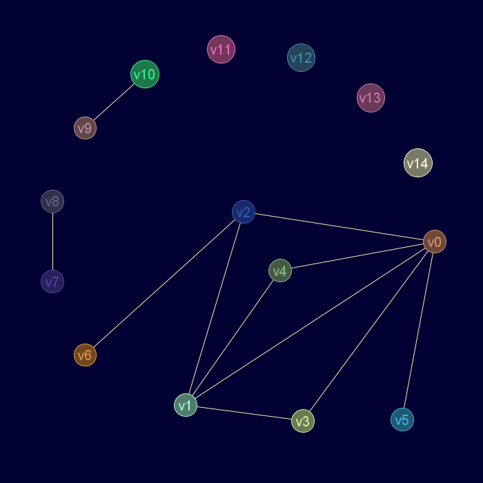

Descripción
Cadena de entrada
gr_puente
Cadena de salida
GRAFO.puente
Uso
gr_puente(<grafo>[,<nodo1>,<nodo2>])
| Parámetros | |||
|---|---|---|---|
| # | Parámetro | Descripción | Valor por defecto |
| 1 | grafo | Diccionario válido de grafo | |
| 2 | nodo1 | Nodo extremo de la arista. Si no se especifican nodo1 y nodo2, se devolverá un vector de pares
representando a cada arista puente |
∅ |
| 3 | nodo2 | Nodo extremo de la arista | ∅ |
Ejemplos
gr_sucesion(2,3,0,0,1,0,1,4,1,0,1,1,1,2,5)
Salida JMEScriptGUI con visor de grafos v0.1:

gr_puentes(gr_sucesion(2,3,0,0,1,0,1,4,1,0,1,1,1,2,5))
VectorEvaluado: | 0 5 | | 2 6 | | 7 8 | | 9 10 |
Aristav0-v2:
gr_puente(gr_sucesion(2,3,0,0,1,0,1,4,1,0,1,1,1,2,5),'v0','v2')
Booleano: falso
Aristav2-v6:
gr_puente(gr_sucesion(2,3,0,0,1,0,1,4,1,0,1,1,1,2,5),2,6)
Booleano: verdadero
Véase también…
Desde / Última modificación
v0.6.2.0